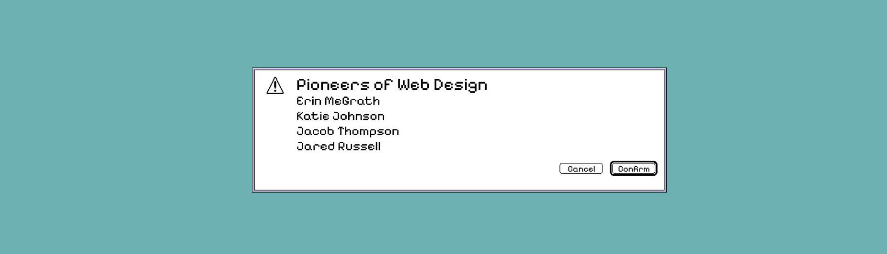
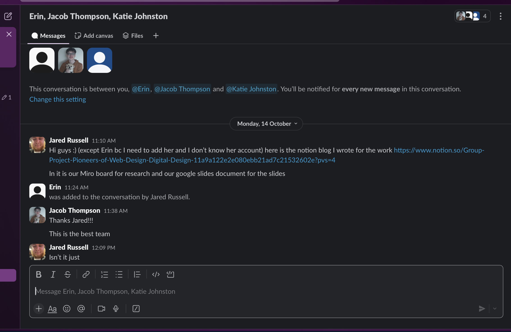

PROJECT SPECIFICATIONS
-
The time we were given for this project was 5 Weeks.
-
Software used for this project: Figma, Google Slides, Slack and Miro.
-
This was a presentation we had to give to our class in first year.
THE BRIEF
We had to work in groups to research and then present a chosen topic, ours being the Pioneers of Web Design. Presenting our research into a clear, engaging visual presentation. We had to create a slide deck that was clear and cohesive, and we were given a strict time limit of 5 minutes to present.
The Problem
The history of web design is often presented through timelines or through heavy written texts. Making it harder for design students to engage and learn about the pioneers who helped shape modern interfaces. This matters because understanding how design has evolved from early operating systems allows current designers to make informed, intentional decisions rather than following trends.
Constraints
This was a first-year, first-semester project, so we didn’t really know each other, which was a challenge at first, but through contributing, talking and having a laugh or two, it was resolved easily. The work also needed to be visually and structurally consistent despite having four people in a group creating their own slides. We also had to fit our content within a time limit to remain engaging and legible while presenting to our class. Design also had to support the theme rather than distract from it.
Process
I took on a leadership and co-ordination role, setting up a Miro board for shared research, a Google Slides document to work in, and a Slack group chat to communicate with each other in, organise tasks and maintain clarity and consistency. This helped keep our group structured and allowed us to work independently while also staying aligned.

I focused primarily on design in apps (2010 to present), looking at and analysing the shift towards mobile-first design, flat UI and a platform-specific convention. Research was written out in Miro and then adapted into our presentation, prioritising clarity over extensive detail.
I also led the visual direction by proposing a classic macOS-inspired design, referencing the early operating system to reinforce the project’s historical aspect. This was discussed and agreed upon together as a group. We also agreed as a group to use EB Garamond due to its association with early Apple marketing and strong readability for a presentation.
As the presentation developed, I kept reviewing to find areas of clutter and took responsibility for refining layout, slide order, and timing. helping our group to focus on quality over quantity when we were exceeding the allocated duration.
OUTCOME
In the end, the final presentation successfully combined historical research with a cohesive design that helped to reinforce the presentation. Feedback highlighted the use of the classic macOS interface as a strong, legible design choice, which helped to enhance engagement. We presented calmly, clearly and confidently, and the presentation itself was well received.
REFLECTION
This is a project I was very proud of after it was done, as it strengthened and proved my ability to lead collaboratively, balance design direction with the group and communicate information clearly. It taught me the importance of hierarchy, pacing and restraint with presenting and design. I used this project to learn to refine content early on, pace my presenting vocabulary and focus on design that supported clarity and narrative.